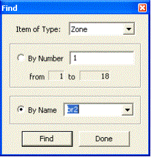

ContamW 提供了对建筑组件执行简单搜索以及执行查找和替换操作的能力。这两个功能都涉及使用可以与 SketchPad 同时显示的对话框，以允许 SketchPad 和对话框之间进行交互。
查找
使用“查找”功能可以通过其名称在 SketchPad 上找到各种建筑组件图标 数量 or 名称 属性。请注意，每当通过添加或删除组件修改每种类型组件的总数时，数字可能会发生变化。每当保存项目文件时，组件将根据其 SketchPad 位置从顶层开始重新编号，并在 SketchPad 上从左到右，然后从上到下一直到建筑物级别。
菜单命令：
Edit → F
工业…
键盘快捷键：
Ctrl+F

图 – 查找对话框
只需选择您想要查找的组件图标类型，从提供的列表中选择编号或名称，然后单击 查找 按钮。该图标将在 SketchPad 上找到并突出显示。如果没有给定类型的组件，则搜索控件将被禁用。
可搜索的项目：
空气处理系统
气流路径 - 包括简单空气处理系统的送风和回风
控制节点 - 超级节点的子节点将服从超级节点
风管接头
风管段
居住者
源/汇
房间 - 包括简单空气处理系统的隐式送风和回风房间
查找和替换
The 查找和替换 功能包括更先进的 找到 该功能使您能够根据用户选择的属性值范围生成项目列表。然后，您可以替换找到的项目列表中的项目的参数。
菜单命令：
Edit → R
替换…
键盘快捷键：
Ctrl+R
图 - 查找和替换对话框
“查找和替换”对话框有两个部分：“查找”和“替换”。使用“查找”部分中的对话框控件生成与所需搜索条件匹配的项目列表。生成找到的项目列表后，请选择“替换”部分中的项目以替换列表中项目的所需参数。您不需要使用替换功能；您可以简单地使用此工具来查找项目文件中的特定项目。
每种类型的构建组件都有两组预定义的参数，可以根据这些参数执行搜索：基于列表和基于值。基于列表的搜索参数附有项目中包含的每种参数类型的列表，例如元素、计划、过滤器等。您可以从列表中选择以搜索完全匹配，也可以输入区分大小写的文本搜索字符串以匹配包含搜索字符串的所有项目。基于值的参数允许您根据所选参数的值范围搜索项目。可以使用这组参数中的任何一个或同时使用这两个参数进行搜索。使用搜索参数旁边的复选框来选择要使用的参数。
设置搜索条件后，单击 查找全部 按钮启动搜索。这将生成一个列表 找到的物品 。然后，您可以选择列表中的项目以显示其属性摘要，或双击以在 SketchPad 上找到该项目。您还可以通过选择项目并单击 删除 按钮。这使您可以细化要替换的项目集。
|
建筑构件 |
列出参数 |
数值参数 |
|
空气处理系统 |
返回的动力学反应 供给动力学反应 室外空气过滤器 回风过滤器 室外空气时间表 |
最小室外气流 返回系统体积 供给系统容积 |
|
空气处理系统供回风 |
空气处理系统 过滤器 时间表 |
风量 |
|
气流路径 |
气流元件 过滤器 时间表 风压选项和配置文件 |
方位角 恒定风压值 乘数 相对海拔 风速调节器 |
|
控制节点 * |
控制类型 |
N/A |
|
风管连接处 |
颜色
|
相对海拔 温度 |
|
风管段 |
颜色
过滤器 时间表 |
长度 损耗系数 |
|
风管端子 |
平衡
过滤器 时间表 风压选项和配置文件 |
方位角
恒定风压值
风速调节器 |
|
居住者 |
吸入时间表 |
体重 乘数 峰值吸入率 |
|
源/汇 |
源/汇元件 时间表 物种 |
乘数 |
|
专区 |
一维区
|
占地面积 温度 体积 |
* 使用此功能无法更换控制节点
表 – 查找和替换选项